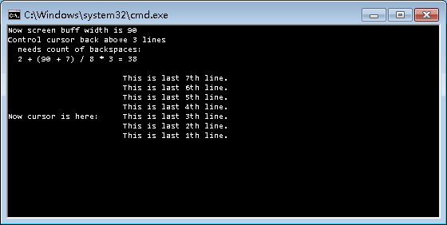

[Tested on 64bit Win7]
echo;<TAB><Backspaces>
<TAB> means a only one horizontal tabulation character -- ASCII value is 9.
<Backspaces> means some Backspaces -- Backspace is the character that ASCII value is 8.
When the cursor's X coor is 0 -- the most left position in a line,
the least count of backspaces can calculate by a formula:
cntBS = 2 + ceil( buffWidth / 8 ) * linesWantBackAbove
or
cntBS = 2 + (buffWidth + 7) / 8 * linesWantBackAbove
BUT when the screen buff width is a number that mod by 8 is 1,
this method will fail, eg. screen buff width is 121, 81, 73, 65, ...

For the formula, demonstration code:
Code: Select all
@echo off
> nul chcp 437
setlocal enabledelayedexpansion
set "TAB=$" & REM Replace the left $ to a real TAB character -- ASCII value 9
for %%w in (90 80 70 60 50) do (
set /a buffwid = %%w
set /a linesWantBackAbove = 3
set /a "cntBS = 2 + (buffwid + 7) / 8 * linesWantBackAbove"
mode !buffwid!
echo;Now screen buff width is !buffwid!
echo;Control cursor back above !linesWantBackAbove! lines
echo; needs count of backspaces:
echo; 2 + ^(!buffwid! + 7^) / 8 * !linesWantBackAbove! = !cntBS!
echo;
for /L %%a in (7 -1 1) do echo;%TAB%%TAB%%TAB%This is last %%ath line.
set "BSs="
for /L %%a in (1 1 !cntBS!) do set "BSs=!BSs!"
echo;%TAB%!BSs!
<nul set /p "=Now cursor is here:"
>nul pause
)
<nul set /p "=any key to exit.."
>nul pause
exit